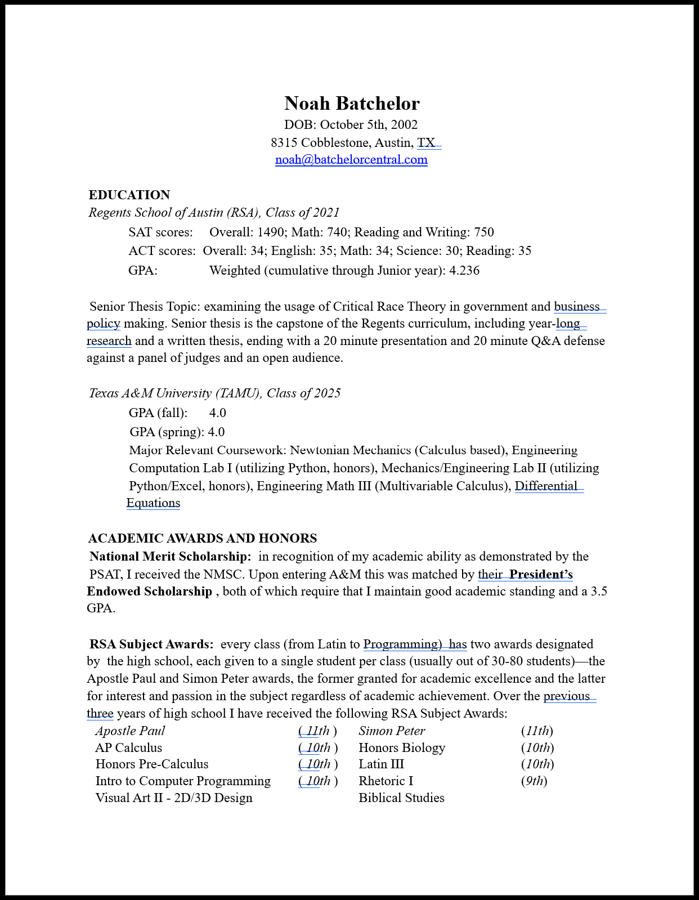

Noah Batchelor's Portfolio Website
Select page:
Home
Technical Portfolio
Qualifications
Service
The AI Page
Swap Mode
Here is my resume
Follow the linked image below for the full PDF.

GitHub
LinkedIn